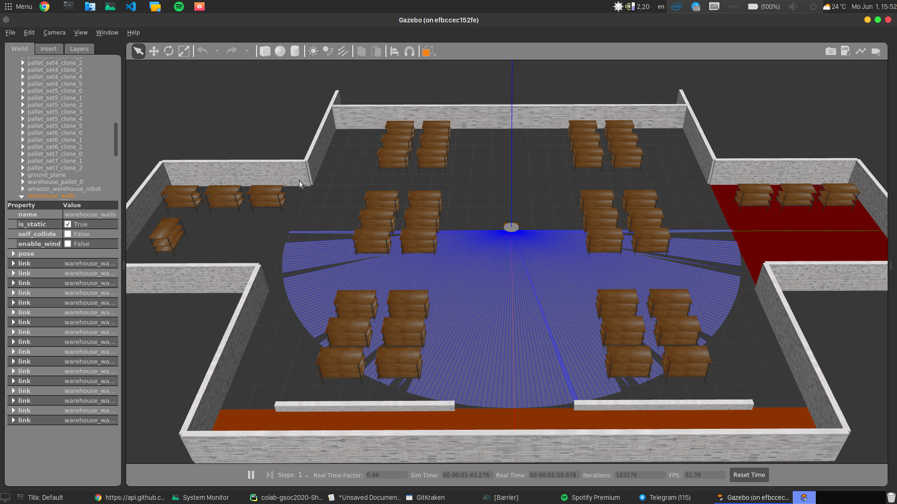

And we have a liftoff!
Issues Fixed:
#53,54 “Adding Noetic support for repo” with PRs #54 for Jderobot_assets, and #25236 for ROS distro with commits.
Week 1 Blog
This week begins the official start of the 2020 GSoC and with that, we have the first package release from Jderobot Academy for ROS Noetic: Jderobot-Assets! Although porting a simple dependancies packages was not so challenging, the release process was indeed an interesting one!
Releasing ROS Packages
Software in ROS is organized in packages and that is what makes ROS so easy to use. Since the introduction of catkin, ros packages are super easy to use, make and also to distribute. But what does it exactly mean when you want to release the package. Let me explain it with a story.
Why to release?
Suppose you have created a package, have tested it and it works quite fine locally. You currently have it in your catkin_workspace/src folder and now you want to give to give it to your friends.
Easy, you just upload the repo on github and tell your friends to download it.
Your friends like your package and they recommend to their friends. Your package is instant hit and now everyone wants it. Meanwhile people are contributing to your github repo to improve the package.
One day you find out that when you pull the latest changes, your package is not getting compiled. But some other user has no such problem. Somewhere, there was a package, dependent on your package, which is now also not working. You have now no clue what broke the package, how to restore it to a working version. At the same time, there are many users which have different platforms and they need an easier way to get the package rather than doing a git pull.
Now you wished only if there existed some kind of common infrastructure which can make all these problems go away.
Then you remember there exists such a place: the official ros package repository. (AKA the place from where you can just do apt install ros-<distro>-<package> . In short, this is what it means by releasing the package.
Prepare for release
For release, we need a couple of things
- The package must be in right format, with
package.xmlfilled in and ready for the release. - The package must be indexed in the rosdistro by creating a PR
- Package needs to be converted into a binary (
ros-rosdistro-example-package)
Our package will have 2 repositories, one where we put our package and another one with
Now, to make our lives easier, ROS has a release automation tool called bloom. We can also do everything we mentioned using bloom. But before that, we need to check a few things:
- Check if xml is in correct format (the first line must be xml indication tag, don’t put comments there!) Do not edit the version and other information manually. It will be updated during the bloom release.
- Do you have push access to the main package repository and the release repository? (if they exist already) Otherwise, follow this for the first time release
- Have you merged all of your changes in the branch you are aiming for the release?
- Is bloom installed?
sudo apt-get install python-bloom - Is your package already indexed? If not, follow this.
- Make sure you have authorised bloom for github PRs using this tutorial.
- Have you read the documentation on here?
Now we can do the release:
The release process
- Generate
changelog.rstusingcatkin_generate_changelogfor a new version update. The file will be automatically updated based on your previous commits and the contributers. Edit if necessary. - Commit and push changes.
- Prepare package for release using
catkin_prepare_release. This will increment the version of your package ( 1.0.2 →1.0.3) and tag it on git for appropriate release. - Run
bloom-releasewith appropriate command parameters.- If a completely new release:
bloom-release --rosdistro <ros_distro> --track <ros_distro> <your_repository_name> --edit - If updating distro, for example hydro
bloom-release foo --track hydro --rosdistro hydro --new-track - If updating version for melodic
bloom-release foo --rosdistro melodic
- If a completely new release:
- Follow on screen instructions. Keep options mostly the same except probably the branch from which you are going to deploy.
- The Bloom will do everything. Sit back and watch for errors.
- If everything goes fine, bloom will update release repo and also create a PR for ROS distro on behalf of your release.
- Wait for your PR to be approved (Might take a day or two)
- Do your victory dance!
This week I did all these things and finally published jderobot_assets package for ROS Noetic. The above guide was the summary of the instructions that I followed. However, the guide might be incorrect/ incomplete and I’ll be updating it as I port more packages.
One (docker) command to run it all
I added a docker compose file which sets up the docker containers in a proper way. Also updated our academy image with multi stage builds and mesa packages so it can run GUI applications.
Now it can start the academy exercise effortlessly, with one command.
xhost +"local:docker@"
docker-compose up --build
Docker will pull required images and copy exercise folders to launch the exercise.

Give it a go and report me if there are any issues!
Au revoir!